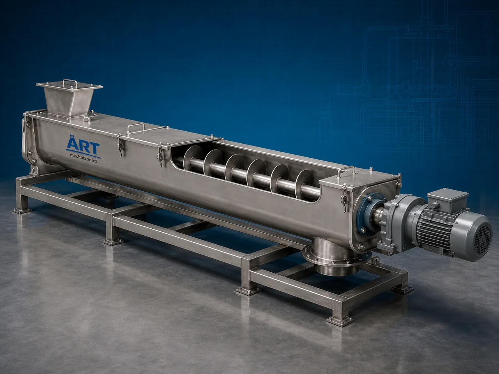

Screw Conveyor Machine (Industrial Auger & Bulk Material Conveying System)
A Screw Conveyor Machine, also known as an Industrial Screw Conveyor or Auger Conveyor System, is a highly efficient industrial material handling equipment designed for continuous conveying, feeding, transferring, dosing, and handling of powders, granules, semi-solid materials, grains, flour,…

About the Screw Conveyor
Screw conveyors are essential for improving: ✔ Material handling efficiency ✔ Production automation ✔ Controlled material feeding ✔ Dust-free conveying ✔ Process integration ✔ Labor reduction
The machine operates using: ✔ Helical screw flights ✔ Rotating auger mechanism ✔ Motor-driven conveyor system ✔ Enclosed conveying structure
to transport materials horizontally, inclined, or vertically with smooth and controlled flow.
Screw conveyor machines are widely used in industries such as:
Food processing industries
Flour mills
Chemical industries
Cement industries
Pharmaceutical industries
Fertilizer plants
Plastic industries
Waste handling plants
Grain processing industries
where continuous bulk material transportation and controlled feeding are critical.
The machine is highly suitable for: ✔ Powder conveying ✔ Flour transfer ✔ Granule feeding ✔ Chemical handling ✔ Bulk material transportation ✔ Dust-free industrial conveying
ART Mechatronics offers high-performance screw conveyor machines, engineered for continuous operation, heavy-duty industrial performance, energy-efficient conveying, and reliable long-term operation.
Working Principle of Screw Conveyor Machine
Powders, granules, grains, sludge, or bulk materials are fed into conveyor inlet hopper
Motor rotates helical screw flight inside conveyor casing
Rotating screw pushes material forward continuously
Machine transports: ✔ Powders ✔ Flour ✔ Granules ✔ Chemicals ✔ Bulk solids ✔ Semi-solid materials smoothly through conveyor system.
Conveyor can operate in: Horizontal configuration Inclined arrangement Vertical transfer system
Enclosed body minimizes: Dust leakage Product contamination Material spillage
Material discharged automatically at desired process point
Types of Screw Conveyor Machines
- 1. Tubular Screw Conveyor
Uses: ✔ Fully enclosed tubular body for dust-free material handling.
- 2. Trough Screw Conveyor
Uses: ✔ Open trough design for easy maintenance and inspection.
- 3. Inclined Screw Conveyor
Designed for: ✔ Elevated material transfer applications
- 4. Vertical Screw Conveyor
Suitable for: ✔ Vertical bulk material lifting
- 5. Food Grade Screw Conveyor
Specially designed for: ✔ Hygienic food and pharmaceutical industries
- 6. Heavy Duty Industrial Screw Conveyor
Suitable for: ✔ Cement ✔ Chemicals ✔ Large-scale industrial operations
Industries Using Screw Conveyor Machine
🍃 Food Processing Industry Flour and powder conveying 🌾 Flour Mill Industry Wheat and flour material transfer ⚗️ Chemical Industry Chemical powder handling systems 💊 Pharmaceutical Industry Hygienic powder conveying applications 🏗️ Cement Industry Cement and fly ash transfer 🌱 Fertilizer Industry Granule and powder conveying ♻️ Waste Handling Industry Sludge and waste material transportation 🌾 Grain Processing Industry Grain and bulk material feeding systems
Features & Advantages
✔ Continuous and controlled material conveying ✔ Dust-free enclosed material handling ✔ Suitable for powders and bulk materials ✔ Heavy-duty industrial construction ✔ Horizontal, inclined and vertical conveying options ✔ Low maintenance requirement ✔ Energy-efficient operation ✔ Easy integration with industrial machinery ✔ Hygienic food-grade construction available
Technical Highlights
Conveyor Type: Tubular screw conveyor Trough screw conveyor Inclined conveyor Vertical conveyor Construction: Stainless Steel / Mild Steel Screw Design: Helical auger flights Drive System: Geared motor drive Variable frequency drive (VFD) Operation: Continuous automatic conveying Automation: Semi-automatic Fully automatic PLC-based systems
Turnkey Screw Conveying Solutions
ART Mechatronics offers: Complete screw conveying systems Feeding and dosing integration Pneumatic conveying integration Material handling plant design Installation & commissioning After-sales service & AMC
Why Choose Art Mechatronics
Expertise in industrial material handling systems Customized conveyor solutions for multiple industries High-performance and durable machine construction Energy-efficient and reliable industrial designs Proven industrial performance across sectors
Applications
Food Processing Plants Flour Mills Chemical Industries Pharmaceutical Manufacturing Units Cement Plants Grain Processing Industries
Industries that use the Screw Conveyor
Related Conveying & Handling machines
Get pricing & specs for the Screw Conveyor
Share the product, target capacity, current process and plant location. These details help our engineers discuss the right machine or line configuration.
One partner, from design to start-up
ART Mechatronics designs, manufactures, installs and commissions your Screw Conveyor solution with regional presence in India, UAE and Thailand.